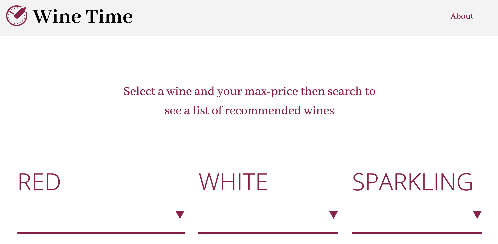
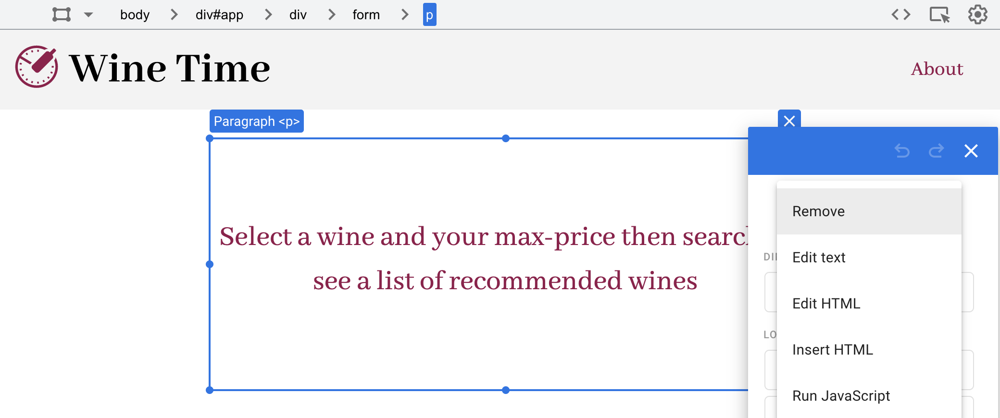
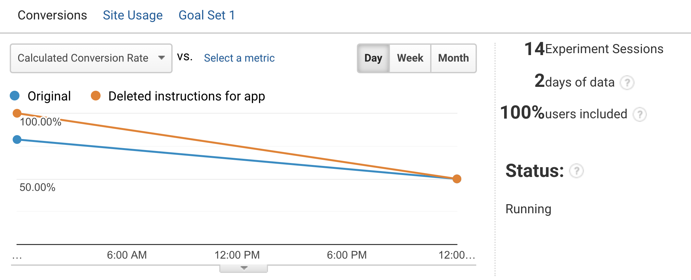
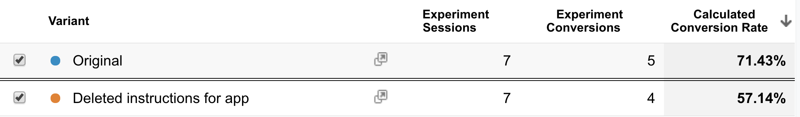

This week I worked on setting up an A/B test with Google Optimize. This feature of Google Analytics is incredibly useful because it allows the developer to track the success of changes to the user interface of a web app or website. The data I got back was really helpful in visualizing the “success” of the “improvements” that I made to my app.
Setting up Google Optimize was a little temperamental, but once it was set up on my wine-time app I was really intrigued by how beneficial it was to have two sets of data for two separate versions of my app.
Initial ideas for A/B test
Before setting up Google Optimize I thought about what variant I wanted to test on my app. Looking at it for a while, I realized that it may be slightly confusing for a new user to understand how this app works and what its purpose is. Although I prefer simplicity I also want people to understand how to use this app, so I wrote a very short sentence on the homepage of the app that provides instructions on how to use it.
Since this was a change I wasn’t 100% sure of, I thought it would be an excellent source for an A/B test. From one perspective, adding more context and instructions to an app typically makes it easier to use, however, adding more text creates more clutter and could potentially confuse users as well. So, for my variant I decided to delete the instructions I had added to see if having them or not having them made a difference to my user statistics.
Setting up the A/B test
My first step in setting up Google Optimize (A/B test) was to link to my Google Analytics account with my Google Analytics ID. After that I “created a new experience,” by adding the url of the site/app I wanted to test and then chose “A/B” as the type of test that I would like to conduct. At this point I added a new variant by clicking “add variant.” The default settings for the A/B test takes 100% of my users and shows 50% of them the original version and the other 50% the new variant version.
Since I had already changed my app to include instructions, this became my “original” variant. To edit the new variant I named “deleted instructions for app”, I clicked the “edit” button next to it, which then took me to a wysiwyg editor where I deleted the container that included the text instructions for the app.
Once this process was complete I needed to set up an objective for the users so I could measure the success of each version. For my objective I used a click event that I had used previously to test the effectiveness of my app. Basically the entire functionality of my app is built into the search button on the main screen of the app so If users aren’t clicking this button then they’re not using the app for its intended function. This made it the obvious choice for the objective to measure which version of the app is more effective.

The Data
I wasn’t too surprised by the data I’ve gotten back from my A/B test so far. The results for each variant were very similar. After two days, the original version (version with instructions) had seven views and five successful conversions (when users clicked the search button). In contrast the version without instructions had seven views and four conversions.
 Conclusion
As of right now I think it’s too soon to make a final decision on which version is more effective and currently the data isn’t dramatically skewed in one direction. My thought process is that if they continue to produce similar or close to the same conversion rates I will choose the version that I think is the most appropriate. In this case it would be the version with the instructions. Although it hasn’t yet proved to be exceedingly more effective than the second variant, I think it’s important to make it clear what the purpose of the app is to the user, even if they do understand the concept immediately. I’d be making a gross generalization if I assumed every user will understand the app instantly and if there is anything I have learned while studying usability it’s to assume nothing – ever.